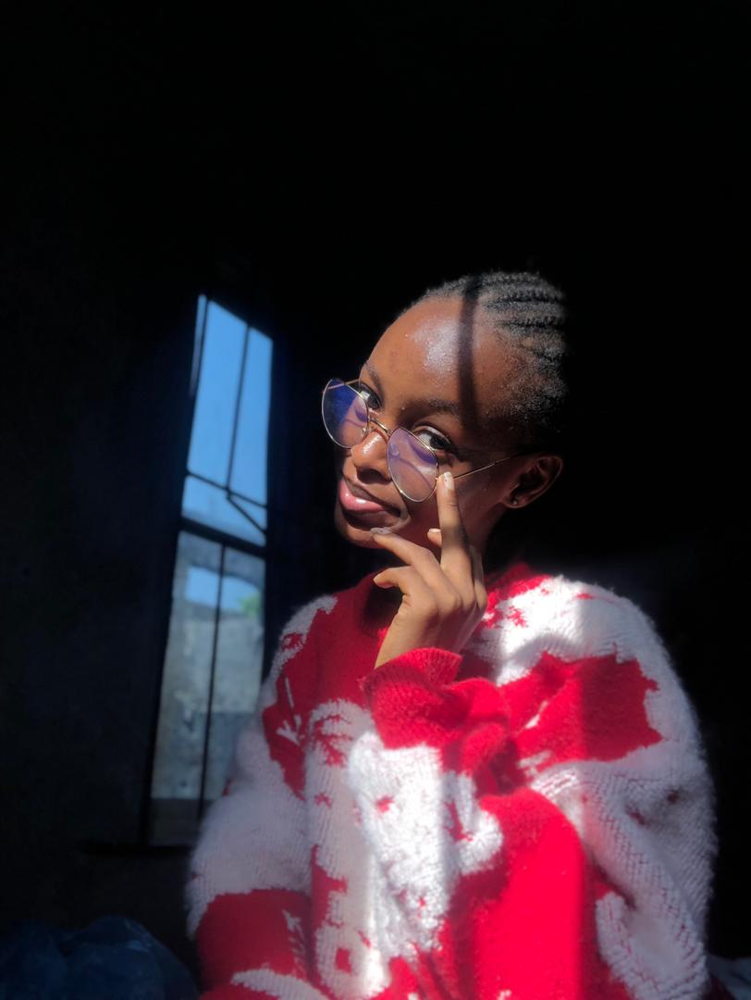
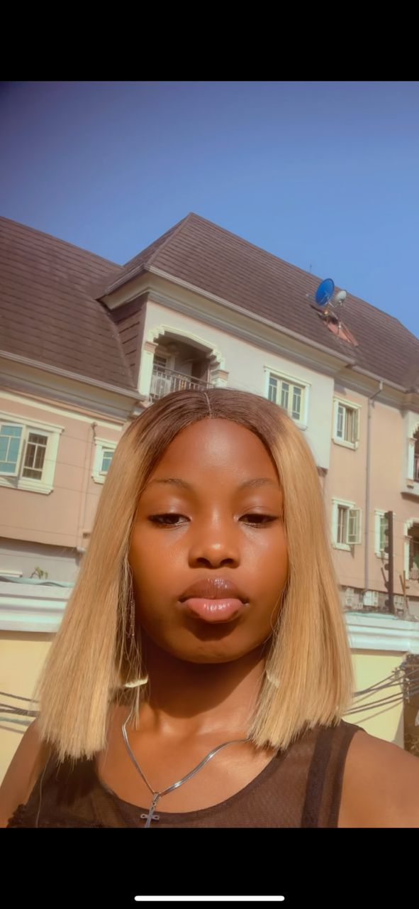
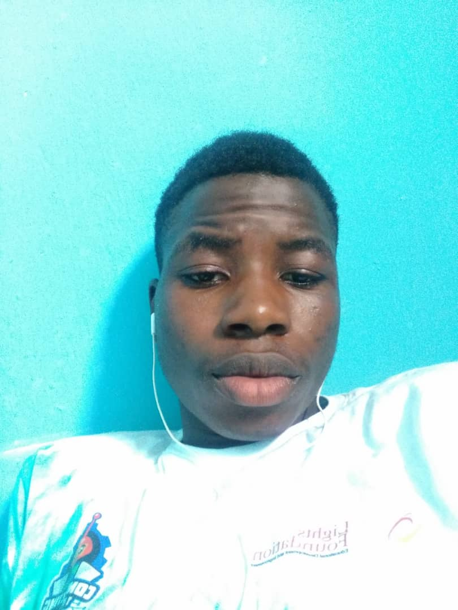
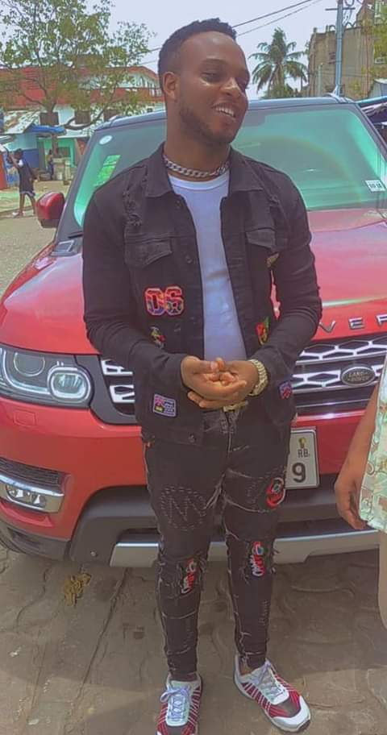
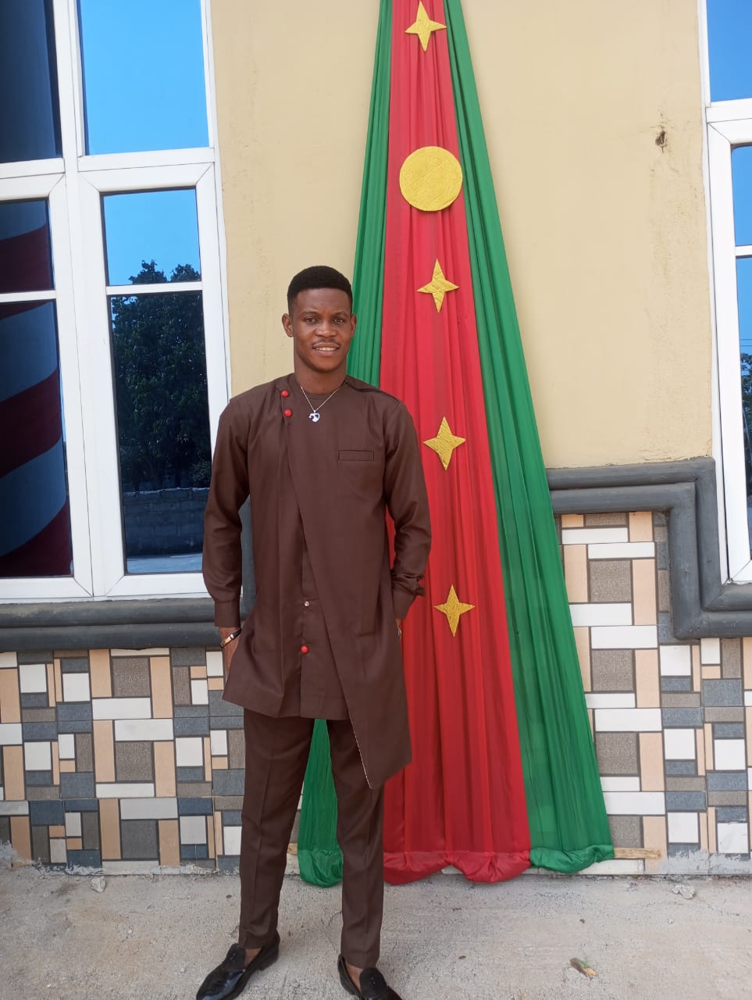
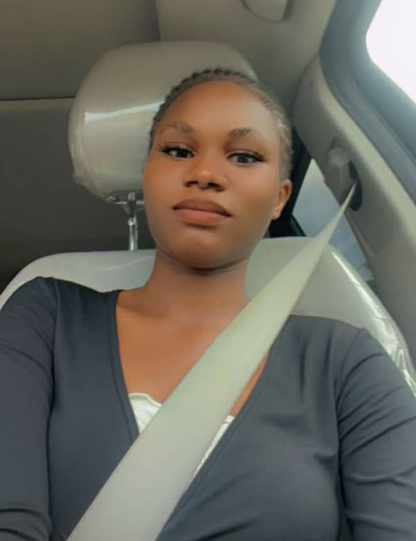
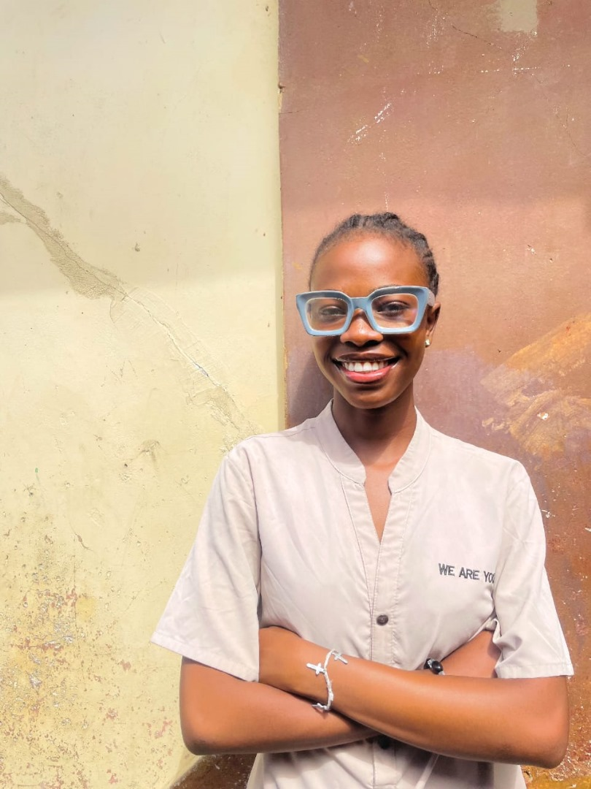
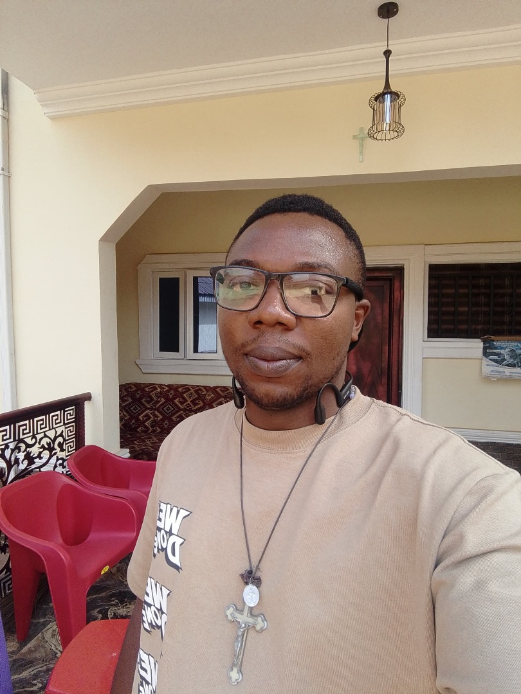

I'm a full-stack developer,have passion of creating
and programming app, recently training at kode10x. I love communicating
with people, making friends and brilliantly learning from others.
I love staying in a quiet place while programming.
oluwaseyi
Newbie Software developer
I'm an aspiring Full Stack Developer,
learning and practicing the basics at Kode10x Tech Academy.
I love listening to motivational tapes to get inspired.

Soyinka Naomi
Web developer, frontend engineer, product designer
An intern learning at kode10x ,
aspiring to be a web developer and a product designer

Godwin Favour
full-stack development at kode10x
I’m a full-stack developer,currently training at Kode10x.
When I’m not coding, I prefer swimming,sleeping or doing anything
that will not stress my brain.

Maxwell
full-stack development at kode10x
I’m a full-stack developer with a passion for creating
a website and also I also love listening to music when am doing things so
I can stay focused.Tech and music help me to communicate with you.

Onyeka Israel
full-stack development at kode10x
I'm a full stack developer at Kode 10x, with a passion
of building a website and also love listening to music and stay focus on tech ..

Udogu Uzochukwu
full-stack developer and cancer researcher
I'm a full stack web developer at Kode10x and a researcher
in cancer related diseases, exploring various bimodal method of nanoparticles.
I'm proficient in English and a good networker.

Ofili Favour
Student atKode 10x full-stack development
Favy Ofili Learning Full-stack Development At Kode 10X I have passion
for TECH SKILLS and am making great efforts in getting better at
coding and being a great software developer.
Daniel Chukwudire
full-stack developer and Software engineer
A skillful experienced fullstack developer with a decade
of programming and app development experience come and watch the master at work
vincent Ezekiel
full-stack development at kode10x
Im a software developer with years of experience in web development.

Adele Omotolani
full-stack development at kode10x
I’m a full-stack developer with a passion for creating smart,
user-friendly web apps.I also love singing—it keeps me creative and balanced.
Tech and music help me express ideas and connect with people.

Paschal Anedu
full-stack development at kode10x
University of Lagos Graduate, Web designer (entry-level), 3D CAD
designer (part design), Cantor / Chorister, recorder and piano player (beginner).